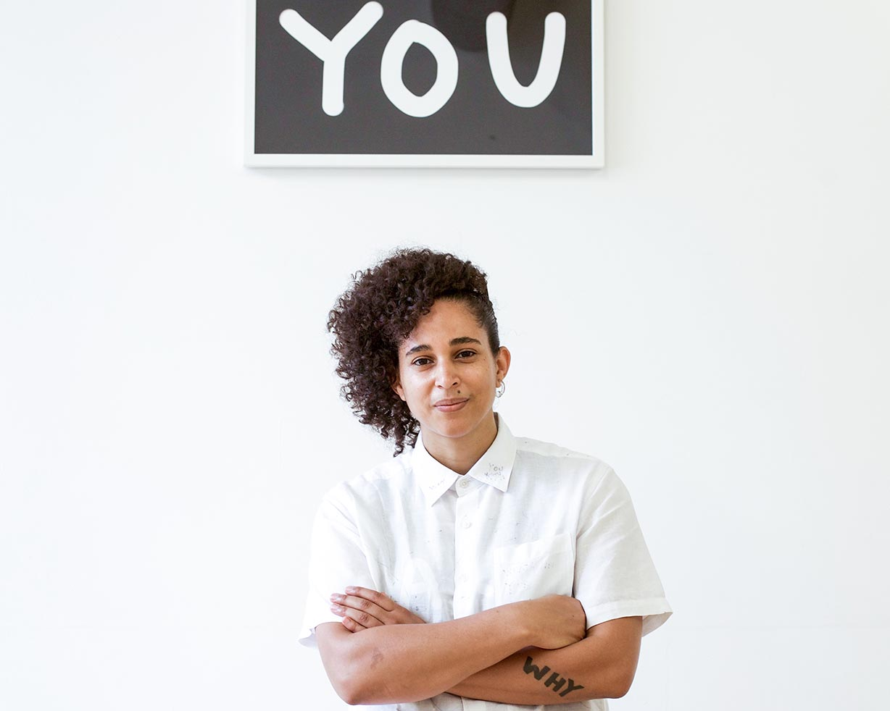
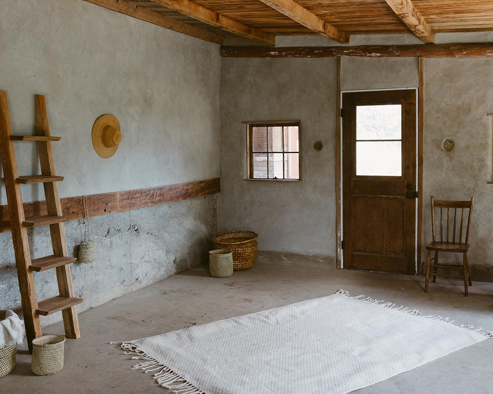
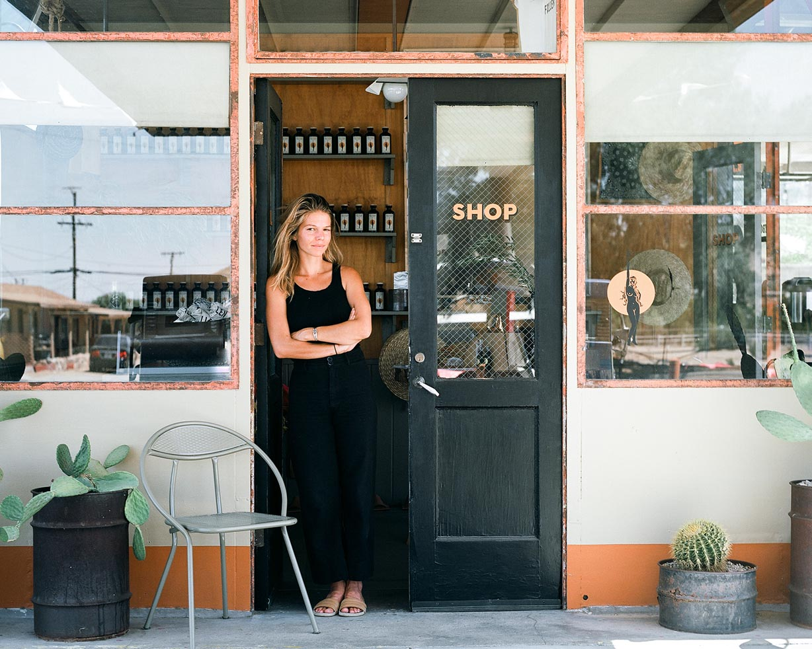
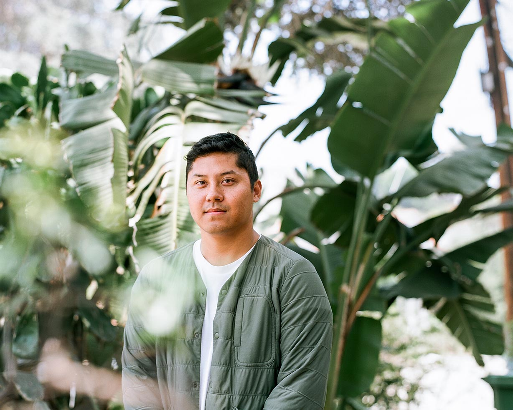

SHANTELL MARTIN | ART
Well, ARE YOU? Artist and educator Shantell Martin uses her work to ask the ultimate question of identity: Are you, YOU?
Well, ARE YOU? Artist and educator Shantell Martin uses her work to ask the ultimate question of identity: Are you, YOU?

CRÉ NATURAL BUILDING | ARCHITECTURE
Closer to Home Bryce Ehrecke & Kelly Brown share how natural building could empower both a more beautiful and a more sustainable future.
Closer to Home Bryce Ehrecke & Kelly Brown share how natural building could empower both a more beautiful and a more sustainable future.

ALISON CARROLL | ENTREPRENEUR
Wonder Valley Wonder Valley is a built around the essentials for cultivating a rich existence, with good food and good health for a good life.
Wonder Valley Wonder Valley is a built around the essentials for cultivating a rich existence, with good food and good health for a good life.

JUSTIN CHUNG | PHOTOGRAPHER
Faculty Department Photographer Justin Chung’s project Faculty Department is an ode to the inspiration found in his subjects.
Faculty Department Photographer Justin Chung’s project Faculty Department is an ode to the inspiration found in his subjects.